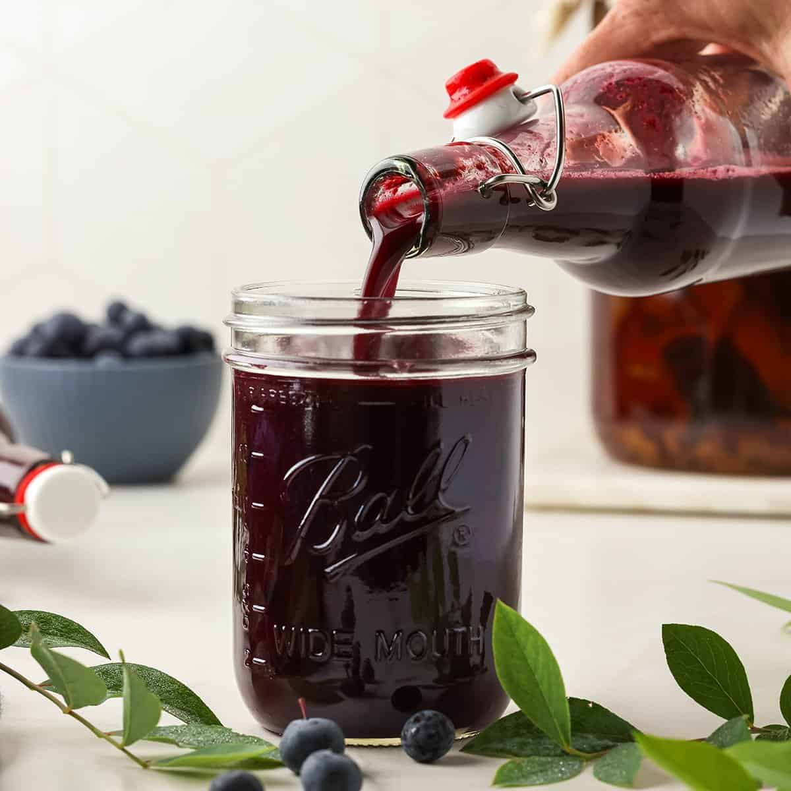
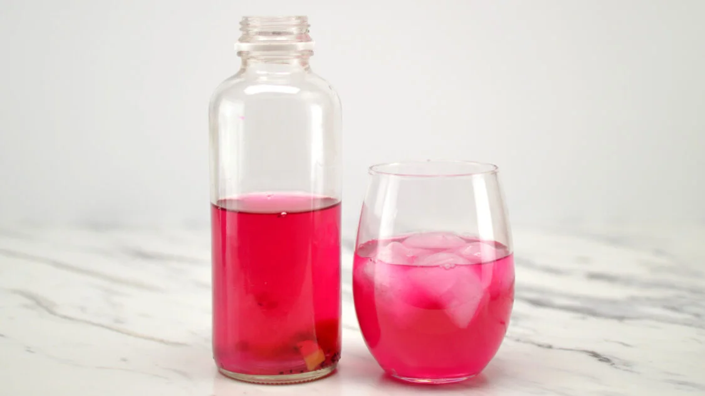

Les faits relatifs à cette apparition, consignés aux divers livres de bord, s’accordaient assez exactement sur la structure de l’objet ou de l’être en question, la vitesse inouïe de ses mouvements, la puissance surprenante de sa locomotion, la vie particulière dont il semblait doué. Si c’était un cétacé, il surpassait en volume tous ceux que la science avait classés jusqu’alors. Ni Cuvier, ni Lacépède, ni M. Dumeril, ni M. de Quatrefages n’eussent admis l’existence d’un tel monstre—à moins de l’avoir vu, ce qui s’appelle vu de leurs propres yeux de savants.

Hadir dari kedalaman hutan rahasia, Blueberry Midnight Potion kami menawarkan perpaduan rasa manis dan asam yang kompleks, layaknya misteri di bawah cahaya bulan. Warna ungu gelapnya yang elegan menyimpan rahasia kekuatan fitonutrien yang ampuh untuk menjernihkan pikiran dan menyeimbangkan pencernaan. Setiap tetesnya adalah hasil alkimia antara buah beri hutan terbaik dan kultur kombucha pilihan, menciptakan simfoni rasa yang tenang namun mendalam. Sebuah ramuan magis untuk menenangkan jiwa setelah hari yang panjang.

Rasakan kekuatan dari Red Dragon Fruit Elixir, sebuah ramuan berwarna fuchsia pekat yang seolah-olah ditarik langsung dari jantung legenda kuno. Kombucha ini bukan sekadar minuman; ia adalah percikan energi yang diekstrak melalui seni fermentasi yang presisi. Dengan rasa manis eksotis yang lembut dan tekstur yang kaya akan antioksidan, varian ini adalah 'potion' sempurna bagi mereka yang mencari keberanian dan kesegaran dalam setiap tegukan. Biarkan keajaiban buah naga merah memulihkan ritme tubuhmu dari dalam.